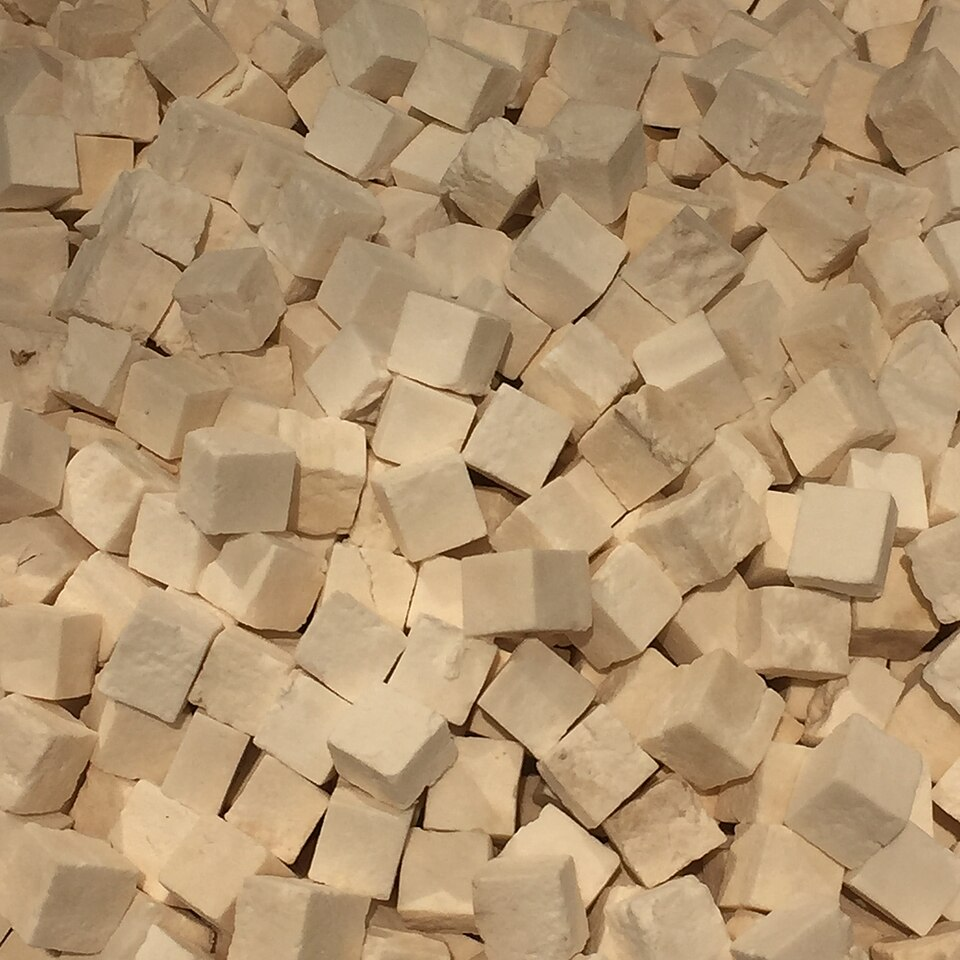
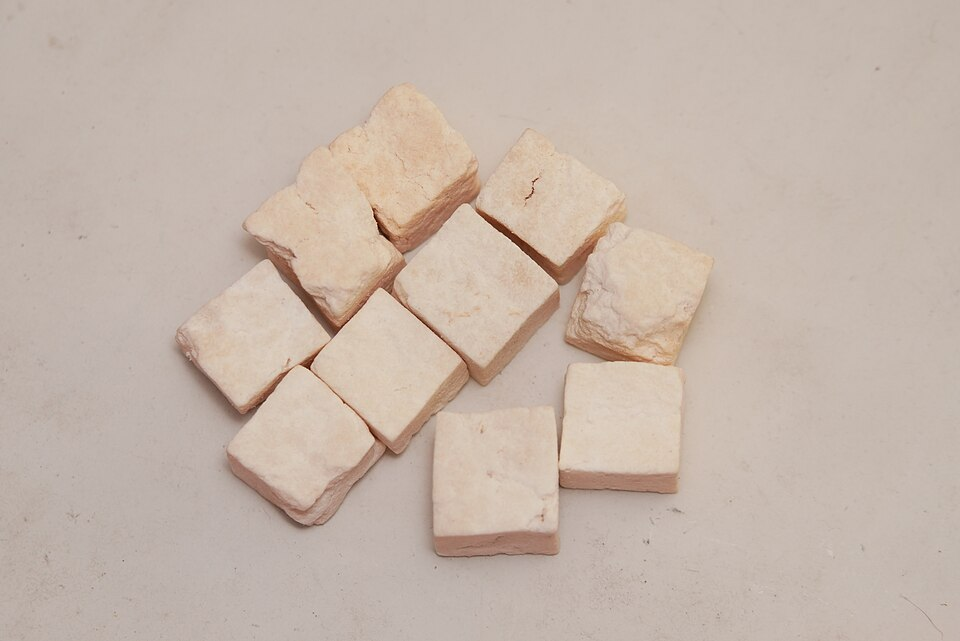

Fúlíng · Poria茯苓
Poria · Draining-damp herbs: promoting urination and reducing swellingPoria · 利水渗湿药·利水消肿药






- Flavour · nature性味
- sweet, bland; neutral甘、淡，平
- Channels归经
- Heart, Lung, Spleen, Kidney心、肺、脾、肾经
- Direction升降浮沉
- Sweet and bland, draining, mainly descending: it leads water and damp down and out through the urine, while also strengthening the spleen and calming the heart, supplementing without force and draining without harshness甘淡渗泄，以沉降为主，导水湿下行从小便出；又能健脾宁心，补而不峻，利而不猛
- Toxicity毒性
- Non-toxic无毒
- Dose (pharmacopoeia)用量（药典）
- 10–15 g (ceiling 15 g)（上限 15 克）
Decocted煎服 - Pregnancy孕期
- No pregnancy restriction listed (not proof of safety)未列孕期禁忌（不等于已证明安全） No pregnancy restriction in the pharmacopoeia or textbooks (which is not proof of safety); Poria is also on China's food-and-medicine list.药典与教材未列孕期禁忌（这不等于已证明孕期安全）；茯苓也是药食同源品种。
- Health Canada加拿大卫生部
- Health Canada status: still to be verified加拿大卫生部状态：待核验 An NHPID monograph or ingredient entry for Poria is still to be verified.加拿大天然保健品数据库中茯苓的专论或成分条目待核验。
- Conservation资源与保护
- Mostly cultivated (Yunnan, Anhui, Hubei); no controls.人工栽培为主（云南、安徽、湖北），无管制。
- Source来源
- Poria cocos (Schw.) Wolf. The dried sclerotium of the fungus Poria cocos (now often Wolfiporia), growing on pine roots; not a plant rootPoria cocos (Schw.) Wolf（今多作 Wolfiporia cocos / W. extensa）。多孔菌科真菌茯苓的干燥菌核（不是植物的根），寄生在松树根上
Traditional actions and indications功效与主治（传统）
🏛 Traditional statements, not efficacy claims; the modern evidence is graded further down.以下为传统说法，不是疗效主张；现代证据见下文分级。
- Promotes urination and drains damp利水渗湿
- Strengthens the spleen健脾
- Calms the heart宁心
Oedema with scanty urine; phlegm-fluid with dizziness and palpitations; poor appetite and loose stools from spleen deficiency; unsettled spirit, palpitations and insomnia.水肿尿少；痰饮眩悸；脾虚食少、便溏泄泻；心神不安、惊悸失眠。
How to recognise it怎么认
Growing植株 Poria is a fungus with no stem or leaves: the sclerotium grows in soil beside pine roots, roughly round or irregular, from small to several kilograms; the rind is dark brown, rough and wrinkled, the inside white or pale pink and granular.茯苓是真菌，没有茎叶：菌核长在松树根旁的土中，类球形或不规则块状，大小不一，大的可达数公斤；外皮黑褐色、粗糙有皱纹，里面白色或淡粉红色、颗粒状。
Decoction pieces饮片 Poria cubes: peeled blocks or thick slices, white, pale pink or pale brown, heavy and firm with a granular break; faint smell, bland taste, sticky when chewed.茯苓块：去皮后切成的方块或厚片，白色、淡红色或淡棕色，体重，质坚实，断面颗粒性；气微，味淡，嚼之粘牙。
Processing炮制
- Poria cubes / slices茯苓块、茯苓片：: Peeled and cut; the usual white Poria去皮切块或片，即常用的白茯苓
- Poria skin; Fu Shen (Poria with pine root)茯苓皮、茯神：: The skin mainly drains water; the part wrapped round a pine root, Fu Shen, mainly calms the spirit皮偏于利水消肿；抱松根而生的部分叫茯神，偏于宁心安神
Cautions and incompatibilities使用注意与配伍禁忌
Use with caution in vacuity-cold with seminal leakage (it drains).虚寒精滑者慎用（渗利之品）。
Interactions with medicines与西药的相互作用
No reliable study of Poria and drug interactions was found (NCCIH and Health Canada checked).未查到茯苓与西药相互作用的可靠研究（查过 NCCIH、加拿大卫生部）。
Modern research, graded现代研究（分级）
- E4 Poria polysaccharides and triterpenes show immune and diuretic activity in animal and cell studies; human randomised trials are few, and human evidence for its traditional use on urination is thin.茯苓多糖、三萜类在动物与细胞实验中显示免疫调节与利尿方面的活性；人体随机试验很少，传统利水之说缺少人体证据。
In the classics古籍原文
「茯苓味甘平。主治胸脅逆氣，憂恚驚恐，心下結痛，寒熱煩滿咳逆，口焦舌乾，利小便」——神农本草经
Shennong Bencao Jing (Divine Farmer's Materia Medica)
The Shennong Bencao Jing ranks Poria in its top grade; 'worry, anger, fright and fear' points to calming the heart and 'promotes urination' to draining water: both of today's main uses are already there.《神农本草经》列茯苓为上品，「忧恚惊恐」讲宁心，「利小便」讲利水——今天的两大功效在本经里都已具备。
Where it is used: the web串联：它在哪些方里、连到哪里
Classical formulas (Shanghan, Jingui)经方（伤寒、金匮）
| Formula方 | Role角色 | Dose: original / today剂量：原书／今用 | Partners in the formula同方配伍 |
|---|---|---|---|
| Poria, Cinnamon Twig, Licorice and Jujube Decoction茯苓桂枝甘草大枣汤 | Monarch君 | original text: see the Chinese original半斤 | Guìzhī (Cassia twig)桂枝 · Gāncǎo (Licorice root)甘草 · Da Zao (jujube)大枣 |
| Poria Frigid Extremities Decoction茯苓四逆汤 | Monarch君 | original text: see the Chinese original四两 | Fùzǐ (Aconite lateral root (processed))附子 · Gānjiāng (Dried ginger)干姜 · Rénshēn (Ginseng (Asian))人参 · Gāncǎo (Licorice root)甘草 |
| Poria, Cinnamon Twig, Atractylodes and Licorice Decoction苓桂术甘汤 | Monarch君 | original text: see the Chinese original四两 | Guìzhī (Cassia twig)桂枝 · Bai Zhu (white atractylodes)白术 · Gāncǎo (Licorice root)甘草 |
| Cinnamon Twig and Poria Pill桂枝茯苓丸 | Minister臣 | original text: see the Chinese original等分 | Guìzhī (Cassia twig)桂枝 · Mǔdānpí (Moutan Bark)牡丹皮 · Tao Ren (peach kernel)桃仁 · Báisháo (White peony root)白芍 |
| Sour Jujube Seed Decoction酸枣仁汤 | Minister臣 | original text: see the Chinese original二兩 | Suan Zao Ren (sour jujube seed)酸枣仁 · Gāncǎo (Licorice root)甘草 · Zhīmǔ (Anemarrhena rhizome)知母 · Chuan Xiong (Sichuan lovage rhizome)川芎 |
| Five-Substance Powder with Poria五苓散 | Minister臣 | original text: see the Chinese original十八铢 | Ze Xie (alisma rhizome)泽泻 · Zhu Ling (polyporus)猪苓 · Bai Zhu (white atractylodes)白术 · Guìzhī (Cassia twig)桂枝 |
| True Warrior Decoction真武汤 | Minister臣 | original text: see the Chinese original三两 | Fùzǐ (Aconite lateral root (processed))附子 · Bai Zhu (white atractylodes)白术 · Sheng Jiang (fresh ginger)生姜 · Báisháo (White peony root)白芍 |
| Polyporus Decoction猪苓汤 | Minister臣 | original text: see the Chinese original一两 | Zhu Ling (polyporus)猪苓 · Ze Xie (alisma rhizome)泽泻 · E Jiao (ass-hide gelatin)阿胶 · Hua Shi (talc)滑石 |
| Bupleurum plus Dragon Bone and Oyster Shell Decoction柴胡加龙骨牡蛎汤 | Assistant佐 | original text: see the Chinese original一两半 | Cháihú (Bupleurum root)柴胡 · Long Gu (fossil bone)龙骨 · Mu Li (oyster shell)牡蛎 · Huángqín (Baikal skullcap root)黄芩 · Bànxià (Pinellia tuber)半夏 · Sheng Jiang (fresh ginger)生姜 · Rénshēn (Ginseng (Asian))人参 · Guìzhī (Cassia twig)桂枝 · Dàhuáng (Rhubarb root and rhizome)大黄 · Qian Dan (red lead oxide)铅丹 · Da Zao (jujube)大枣 |
| Chinese Angelica and Peony Powder当归芍药散 | Assistant佐 | original text: see the Chinese original四两 | Báisháo (White peony root)白芍 · Dāngguī (Chinese Angelica Root)当归 · Chuan Xiong (Sichuan lovage rhizome)川芎 · Bai Zhu (white atractylodes)白术 · Ze Xie (alisma rhizome)泽泻 |
| Aconite Decoction附子汤 | Assistant佐 | original text: see the Chinese original三两 | Fùzǐ (Aconite lateral root (processed))附子 · Rénshēn (Ginseng (Asian))人参 · Bai Zhu (white atractylodes)白术 · Báisháo (White peony root)白芍 |
| Hou's Black Powder侯氏黑散 | Assistant佐 | original text: see the Chinese original三分 | Ju Hua (chrysanthemum flower)菊花 · Bái Zhú (white atractylodes rhizome)白朮 · Xìxīn (Asarum root and rhizome)细辛 · Mǔ Lì (oyster shell)牡蠣 · Jié Gěng (platycodon root)桔梗 · Fángfēng (Saposhnikovia root)防风 · Rénshēn (Ginseng (Asian))人参 · Fán Shí (alum)礬石 · Huángqín (Baikal skullcap root)黄芩 · Dāngguī (Chinese Angelica Root)当归 · Gānjiāng (Dried ginger)干姜 · Chuān Xiōng (sichuan lovage rhizome)芎藭 · Guìzhī (Cassia twig)桂枝 |
| Kidney Qi Pill肾气丸（金匮肾气丸） | Assistant佐 | original text: see the Chinese original三两 | Gan Di Huang (dried rehmannia)干地黄 · Shan Yao (Chinese yam)山药 · Shānzhūyú (Cornelian Cherry Fruit)山茱萸 · Ze Xie (water plantain rhizome)泽泻 · Mǔdānpí (Moutan Bark)牡丹皮 · Guìzhī (Cassia twig)桂枝 · Fùzǐ (Aconite lateral root (processed))附子 |
Later formulas (Song to Qing)时方（宋元明清）
| Formula方 | Role角色 | Dose: original / today剂量：原书／今用 | Partners in the formula同方配伍 |
|---|---|---|---|
| Ginseng, Poria, and Atractylodes Macrocephala Powder参苓白术散 | Monarch君 | original text: see the Chinese original原文未注（《局方》原方二斤） | Liánzǐròu (lotus seed)莲子肉 · Yìyǐrén (coix seed)薏苡仁 · Shārén (amomum fruit)砂仁 · Jiégěng (platycodon root)桔梗 · Báibiǎndòu (white hyacinth bean)白扁豆 · Rénshēn (Ginseng (Asian))人参 · Gāncǎo (Licorice root)甘草 · Báizhú (white atractylodes rhizome)白术 · Shānyào (Chinese yam)山药 |
| Pinellia and Magnolia Bark Decoction半夏厚朴汤 | Minister臣 | original text: see the Chinese original四钱 | Bànxià (Pinellia tuber)半夏 · Hou Po (magnolia bark)厚朴 · Zi Su Ye (perilla leaf)紫苏叶 · Sheng Jiang (fresh ginger)生姜 · Da Zao (jujube)大枣 |
| Ginseng Nourishing-Nutritive Decoction人参养荣汤 | Minister臣 | original text: see the Chinese original原文未注 | Rénshēn (Ginseng (Asian))人参 · Bai Zhu (white atractylodes rhizome)白术 · Huángqí (Astragalus root)黄芪 · Gāncǎo (Licorice root)甘草 · Chénpí (Dried tangerine peel)陈皮 · Rou Gui (cassia bark)肉桂 · Dāngguī (Chinese Angelica Root)当归 · Shúdìhuáng (Prepared rehmannia root)熟地黄 · Wu Wei Zi (schisandra fruit)五味子 · Báisháo (White peony root)白芍 · Yuan Zhi (polygala root)远志 |
| Bolster the Spleen Beverage实脾饮 | Minister臣 | original text: see the Chinese original此处未单列分量（须对纸本） | Bai Zhu (white atractylodes)白术 · Gāncǎo (Licorice root)甘草 · Hou Po (magnolia bark)厚朴 · Da Fu Pi (areca peel)大腹皮 · Cao Dou Kou (alpinia seed)草豆蔻 · Mùxiāng (Costus Root)木香 · Mu Gua (Chinese quince)木瓜 · Fùzǐ (Aconite lateral root (processed))附子 · Gānjiāng (Dried ginger)干姜 |
| All-Inclusive Great Tonifying Decoction十全大补汤 | Minister臣 | original text: see the Chinese original原文未注 | Rénshēn (Ginseng (Asian))人参 · Baizhu (white atractylodes rhizome)白术 · Gāncǎo (Licorice root)甘草 · Shúdìhuáng (Prepared rehmannia root)熟地黄 · Dāngguī (Chinese Angelica Root)当归 · Báisháo (White peony root)白芍 · Chuanxiong (Sichuan lovage rhizome)川芎 · Huángqí (Astragalus root)黄芪 · Rougui (cinnamon bark)肉桂 |
| Ginseng Toxin-Expelling Powder败毒散（人参败毒散） | Assistant佐 | original text: see the Chinese original一兩 | Rénshēn (Ginseng (Asian))人参 · Qiang Huo (Notopterygium root and rhizome)羌活 · Du Huo (Angelica pubescens root)独活 · Cháihú (Bupleurum root)柴胡 · Qian Hu (Peucedanum root)前胡 · Chuan Xiong (Sichuan lovage rhizome)川芎 · Zhi Ke (bitter orange fruit)枳壳 · Jie Geng (Platycodon root)桔梗 · Gāncǎo (Licorice root)甘草 |
| Two Aged Herbs Decoction二陈汤 | Assistant佐 | original text: see the Chinese original一钱 | Bànxià (Pinellia tuber)半夏 · Chénpí (Dried tangerine peel)陈皮 · Gāncǎo (Licorice root)甘草 · Sheng Jiang (fresh ginger)生姜 |
| Agastache Qi-Correcting Powder藿香正气散 | Assistant佐 | original text: see the Chinese original三两 | Huo Xiang (agastache herb)藿香 · Zi Su Ye (perilla leaf)紫苏叶 · Bai Zhi (angelica dahurica root)白芷 · Da Fu Pi (areca peel)大腹皮 · Bai Zhu (white atractylodes)白术 · Chénpí (Dried tangerine peel)陈皮 · Ban Xia Qu (fermented pinellia)半夏曲 · Hou Po (magnolia bark)厚朴 · Jie Geng (platycodon root)桔梗 · Gāncǎo (Licorice root)甘草 · Sheng Jiang (fresh ginger)生姜 · Da Zao (jujube)大枣 |
| Hidden Tiger Pill虎潜丸 | Assistant佐 | original text: see the Chinese original原文此处未单独标注 | Huángbǎi (Phellodendron Bark)黄柏 · Zhīmǔ (Anemarrhena rhizome)知母 · Shúdìhuáng (Prepared rehmannia root)熟地黄 · Hu Gu (tiger bone; banned)虎骨 · Gui Jia (tortoise plastron)龟甲 · Dāngguī (Chinese Angelica Root)当归 · Báisháo (White peony root)白芍 · Niu Xi (achyranthes root)牛膝 · Suo Yang (cynomorium stem)锁阳 · Chénpí (Dried tangerine peel)陈皮 · Gānjiāng (Dried ginger)干姜 · Yang Rou (mutton)羊肉 · Gāncǎo (Licorice root)甘草 · Wu Wei Zi (schisandra fruit)五味子 |
| Six-Ingredient Rehmannia Pill六味地黄丸 | Assistant佐 | original text: see the Chinese original三两（乳拌） 9 g | Shúdìhuáng (Prepared rehmannia root)熟地黄 · Shānzhūyú (Cornelian Cherry Fruit)山茱萸 · Shan Yao (Chinese yam)山药 · Ze Xie (water plantain rhizome)泽泻 · Mǔdānpí (Moutan Bark)牡丹皮 |
| Mantis Egg-Case Powder桑螵蛸散 | Assistant佐 | original text: see the Chinese original原文此处未单独标注 | Sang Piao Xiao (mantis egg case)桑螵蛸 · Long Gu (fossil bone)龙骨 · Gui Jia (tortoise plastron)龟甲 · Rénshēn (Ginseng (Asian))人参 · Fu Shen (poria with pine root)茯神 · Yuan Zhi (polygala root)远志 · Shi Chang Pu (acorus rhizome)石菖蒲 · Dāngguī (Chinese Angelica Root)当归 |
| Four Gentlemen Decoction四君子汤 | Assistant佐 | original text: see the Chinese original各等分 9 g | Rénshēn (Ginseng (Asian))人参 · Bai Zhu (white atractylodes)白术 · Gāncǎo (Licorice root)甘草 |
| Celestial Emperor Heart-Supplementing Pill天王补心丹 | Assistant佐 | original text: see the Chinese original一用茯神 | Sheng Dihuang (raw rehmannia root)生地黄 · Rénshēn (Ginseng (Asian))人参 · Xuan Shen (scrophularia root)玄参 · Dānshēn (Salvia root (Danshen))丹参 · Jie Geng (platycodon root)桔梗 · Yuan Zhi (polygala root)远志 · Dāngguī (Chinese Angelica Root)当归 · Wu Wei Zi (schisandra fruit)五味子 · Tian Dong (asparagus tuber)天冬 · Mai Dong (ophiopogon tuber)麦冬 · Suan Zao Ren (spiny jujube seed)酸枣仁 · Bai Zi Ren (biota seed)柏子仁 |
| Costusroot and Amomum Six Gentlemen Decoction香砂六君子汤 | Assistant佐 | original text: see the Chinese original原文未注 | Rénshēn (Ginseng (Asian))人参 · Baizhu (white atractylodes rhizome)白术 · Gāncǎo (Licorice root)甘草 · Chénpí (Dried tangerine peel)陈皮 · Bànxià (Pinellia tuber)半夏 · Mùxiāng (Costus Root)木香 · Sharen (amomum fruit)砂仁 |
| Rambling Powder逍遥散 | Assistant佐 | original text: see the Chinese original原文未注 | Cháihú (Bupleurum root)柴胡 · Dāngguī (Chinese Angelica Root)当归 · Báisháo (White peony root)白芍 · Bai Zhu (white atractylodes rhizome)白术 · Gāncǎo (Licorice root)甘草 · Sheng Jiang (fresh ginger rhizome)生姜 · Bòhe (Chinese mint)薄荷 |
| Anemarrhena, Phellodendron and Rehmannia Pill知柏地黄丸 | Assistant佐 | original text: see the Chinese original三两 | Shúdìhuáng (Prepared rehmannia root)熟地黄 · Shānzhūyú (Cornelian Cherry Fruit)山茱萸 · Shan Yao (Chinese yam)山药 · Zhīmǔ (Anemarrhena rhizome)知母 · Huángbǎi (Phellodendron Bark)黄柏 · Ze Xie (water plantain rhizome)泽泻 · Mǔdānpí (Moutan Bark)牡丹皮 |
Folk and single-herb remedies偏方、验方、单方
| Formula方 | Use用法 | Self-use能否自用 |
|---|---|---|
| Poria and honey face mask白茯苓末蜜调敷面 | External use外用 | Low-risk household use, within the safety line below低风险家用，守住下面的安全线 |
| Alisma and atractylodes powder (edema and swelling from water-dampness)泽泻白术散（水湿肿胀） | Taken by mouth内服 | Literature record only: not advised for self-use仅作文献记录，不建议自行使用 |
Patterns reached through these formulas经由这些方连到的证
- Exterior wind-cold-damp外感风寒湿（兼里热或气虚） ← Ginseng Toxin-Expelling Powder败毒散（人参败毒散）
- Lesser-yin cold transformation / yang collapse (severe)少阴寒化 / 阳衰（重症） ← Poria Frigid Extremities Decoction茯苓四逆汤, Aconite Decoction附子汤Symptoms症状 Fainting (first aid)晕厥（急救）
- Yang deficiency with water flooding / fluids rising阳虚水泛 / 中阳不足、水饮上逆 ← Poria Frigid Extremities Decoction茯苓四逆汤, Poria, Cinnamon Twig, Atractylodes and Licorice Decoction苓桂术甘汤, True Warrior Decoction真武汤
- Wind-stroke with deficiency and cold中风（正虚、风邪夹寒） ← Hou's Black Powder侯氏黑散
- Exterior wind-cold with interior damp stagnation外感风寒、内伤湿滞 ← Agastache Qi-Correcting Powder藿香正气散
- Liver-kidney yin deficiency肝肾阴虚 ← Hidden Tiger Pill虎潜丸, Six-Ingredient Rehmannia Pill六味地黄丸, Anemarrhena, Phellodendron and Rehmannia Pill知柏地黄丸Symptoms症状 Tinnitus and hearing loss耳鸣耳聋 · Dizziness and vertigo眩晕 · Low-back pain腰痛 · Insomnia不寐（失眠）
- Dual deficiency of qi and blood气血两虚 ← Ginseng Nourishing-Nutritive Decoction人参养荣汤, All-Inclusive Great Tonifying Decoction十全大补汤
- Spleen deficiency with dampness脾虚夹湿 ← Ginseng, Poria, and Atractylodes Macrocephala Powder参苓白术散Qigong功法 Baduanjin (Eight Pieces of Brocade)八段锦 · Tai chi (simplified 24-form)太极拳（简化二十四式）
- Kidney yang deficiency肾阳虚 ← Kidney Qi Pill肾气丸（金匮肾气丸）
- Spleen-stomach qi deficiency脾胃气虚 ← Four Gentlemen Decoction四君子汤, Costusroot and Amomum Six Gentlemen Decoction香砂六君子汤
- Liver blood deficiency with deficiency vexation and insomnia肝血不足、虚烦不眠 ← Sour Jujube Seed Decoction酸枣仁汤
- Heart yin and blood deficiency with an unsettled mind阴虚血少、心神不安（心肾阴亏） ← Celestial Emperor Heart-Supplementing Pill天王补心丹
- Liver constraint with blood deficiency and weak spleen肝郁血虚脾弱 ← Rambling Powder逍遥散
Exam notes (HER)考点（HER）
HER essentials: (1) drains water without harming the upright qi, usable in any oedema with the right partners; (2) strengthens the spleen (Si Jun Zi Tang), transforms fluids (Ling Gui Zhu Gan Tang), calms the heart (Fu Shen); (3) how it differs from Zhu Ling, Ze Xie and Yi Yi Ren; (4) skin, Fu Shen and red Poria.HER 必考：①利水而不伤正，寒热虚实水肿都可配伍；②健脾（四君子汤）、化饮（苓桂术甘汤）、宁心（茯神）；③与猪苓、泽泻、薏苡仁的区别；④茯苓皮、茯神、赤茯苓的分工。
Sources依据
- Chinese Pharmacopoeia Commission. Pharmacopoeia of the People's Republic of China, 2020 edition, vol. I国家药典委员会《中华人民共和国药典》2020 年版一部
- Zhong Gansheng (ed.). Chinese Materia Medica (national TCM higher-education textbook series)钟赣生主编《中药学》（全国中医药行业高等教育规划教材）